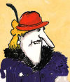
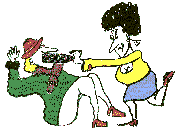
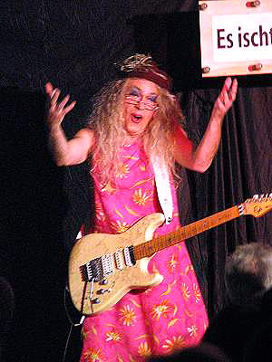
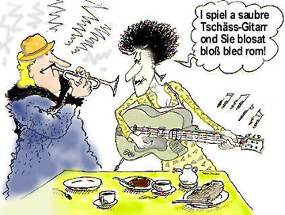
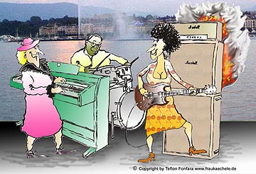

Schwäbischer Erfindungsgeist
Die Spätzles-Klappe
Frau Kächele zeigt die wertvollste Erfindung für die Hausfrau.
Die wilden Hefezopf-Weiber aus SDR 3
Die wilden „Hefezopf-Weiber“ waren die ersten Radio-Kult-Figuren des SDR, „Radio für den Wilden Süden“. Der „wilde Süden“ ging, der Kult blieb, und zwei schrille Weiber erzählen ihre wildesten Hefezopf-Geschichten. Hier erfährst Du alles über Kult, Sex & Hefezopf … (mit einem Haufen Butter drin!)


Kurzinfo
Es entstanden über 800 Folgen in einer Laufzeit von 12 Jahren. Teflon erfindet die Serie, schreibt alle Folgen, spricht alle Stimmen (Hörfunk) und spielt beide Personen selbst (TV). Die Serie endete 1998 mit der Fusion von SDR und SWF (heute SWR).
Im Mittelpunkt steht das Gebäck Hefezopf und der schwäbische Erfinderreichtum. Highlights waren Szenen wie „Die Orgasmusschaukel“ oder „Das Kehrwochen-Frühwarnsystem“. Es entstanden Songs in den Genres Volksmusik, Rock und Techno.
Später ging Teflon Fonfara zuerst solo, dann mit Babs Steinbock auf die Bühne. Dazu siehe auch SWR Doku in Landesschau.


Eberhard Kächele ist ein Vetter von Frau Kächele, Mitglied der schwäbischen Kächele-Dynastie seit 1986. Dazu aktuell hier mehr …
Mehr Videos: Schwäbische Comedy

Neu: Das Hörspiel
Die Kultweiber Frau Kächele & Frau Peters aus dem Wilden Süden besichtigen den neuen Stuttgarter Bahnhof und erleben dort unfassbare Abenteuer. Skurrile Geschichten zu Stuttgart 21. Zum Buch kommt hier das Hörspiel!
Mehr …Kurzer Zeichentrick.
Im November 1986 wurde erstmals die Kult-Show „Frau Kächele & Frau Peters“ öffentlich-rechtlich gesendet. Hier haben wir für Euch eine kleine Rückschau zusammengestellt mit TV-Auftritten und Splittern aus dem Song „Klinsi we love you“.


Frau Kächele und Frau Peters bei einer Performance am Genfer See. Und wer spielt denn da am Schlagzeug mit? Ist das etwa der Jazz-Drummer Billy Cobham? Oder ist dies nur ein Namensvetter, der früher mal in Deizisau mit Gotthilf Fischer gejammt hat?
Song: „Smoke überm Backherd“, zum Anhören gehe in unser MP3-Archiv.